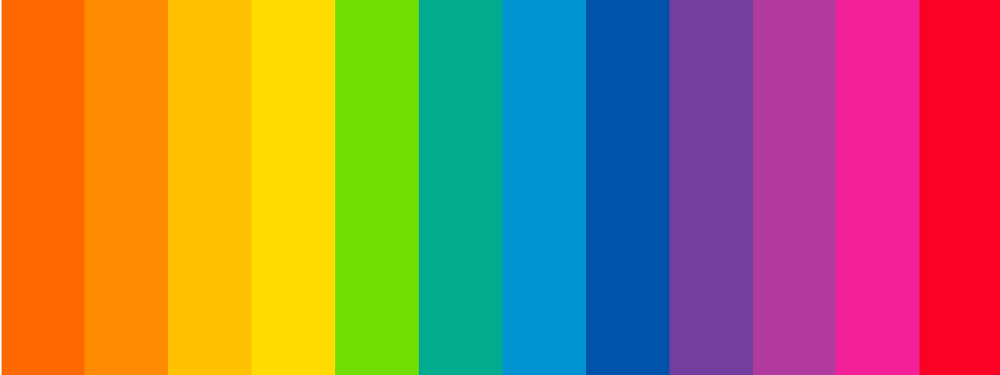
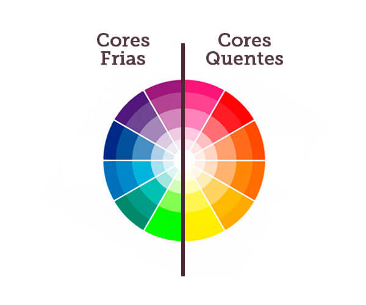
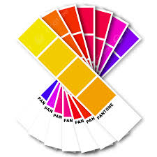
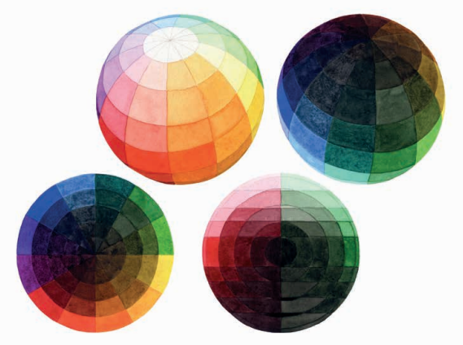
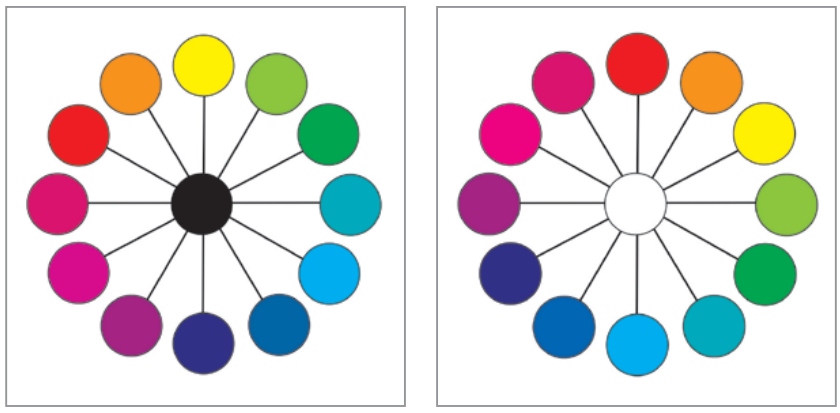
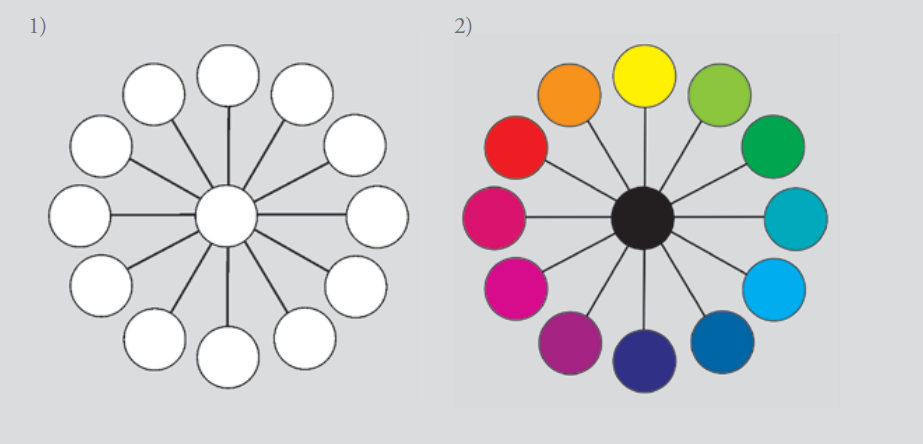

Cores
Quentes
Frias

Introdução
Cores quen tes e frias são utilizadas para denominar a temperatura da cor. Essas tonalidades tendem a produzir a sensação de que as formas se expandem e se aproximam. Cores quentes tendem a nos aproximar enquanto as cores frias tendem a nos afastar. Mais tarde, Newton reduziu as sete cores a seis, sendo três primárias e três secundárias. Como se referia a cores-luz, as primárias são: vermelho (R), verde (G) e azul-violetado (B).
Curiosidade
O segundo tipo de Círculo Cromático foi pensado na organização em quatro cores. Antes utilizado por Edwald Hering, este círculo foi também estruturado por Wilhelm Ostwald em 1916. O Círculo Cromático de Ostwald tem forte apelo aos princípios da percepção cromática. Um Círculo Cromático formado por cinco cores principais, a princípio, parece desequilibrado. Ao contrário, com ele, Albert Munsell mostrou cinco cores principais: vermelho, amarelo, verde, azul-violetado e púrpura; distribuídas em um diagrama circular. Pintor da escola romântica alemã, Runge pensou um modelo com a forma de uma esfera parecida com o globo terrestre. O polo norte corresponde ao branco e o polo sul ao preto. O equador corresponde ao círculo de matizes puros ou saturados: vermelho, violeta, azul, verde, amarelo e laranja.

O Círculo Cromático gerado a partir das cores-luz e mostrado na Figura 2.8, em suas primárias R (red), G (green) e B (blue), é utilizado principalmente para se pensar cores em websites ou em cenários de televisão, onde a cor-luz é instrumento principal.
ATIVIDADE CÍRCULO CROMÁTICO EM COR-PIGMENTO TRANSPARENTE Objetivo: construir um instrumento para se pensar os esquemas de combinações de cores possíveis, um Círculo Cromático. Será a partir das cores-pigmento transparentes, pois são as cores que se consegue em tinta. Material: folha para guache, tintas guache nas cores magenta, ciano, amarelo e preto. Descrição: desenhar um círculo com doze cores, primárias, secundárias e terciárias em cores- -pigmento transparentes, dispostas segundo a teoria.

